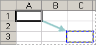

Select the cell containing the formula that you want to copy.
In the Clipboard group of the Home tab, click Copy.
Do one of the following:
To paste the formula and any formatting, in the Clipboard group of the Home tab, click Paste.
To paste the formula only, iIn the Clipboard group of the Home tab, click Paste, click Paste Special, and then click Formulas.
Note: You can paste only the formula results. In the Clipboard group of the Home tab, click Paste, click Paste Special, and then click Values.
Verify that the cell references in the formula produce the result that you want. If necessary, switch the type of reference by doing the following:
Select the cell that contains the formula.
In the formula bar , select the reference that you want to change.
Press F4 to switch between the combinations.
The table summarizes how a reference type will updates if a formula containing the reference is copied two cells down and two cells to the right.
|
For a formula being copied: |
If the reference is: |
It changes to: |
|---|---|---|
|
 |
$A$1 (absolute column and absolute row) |
$A$1 |
|
A$1 (relative column and absolute row) |
C$1 |
|
|
$A1 (absolute column and relative row) |
$A3 |
|
|
A1 (relative column and relative row) |
C3 |